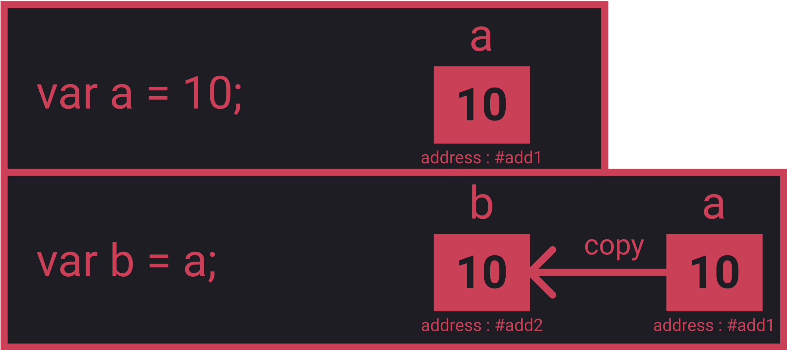
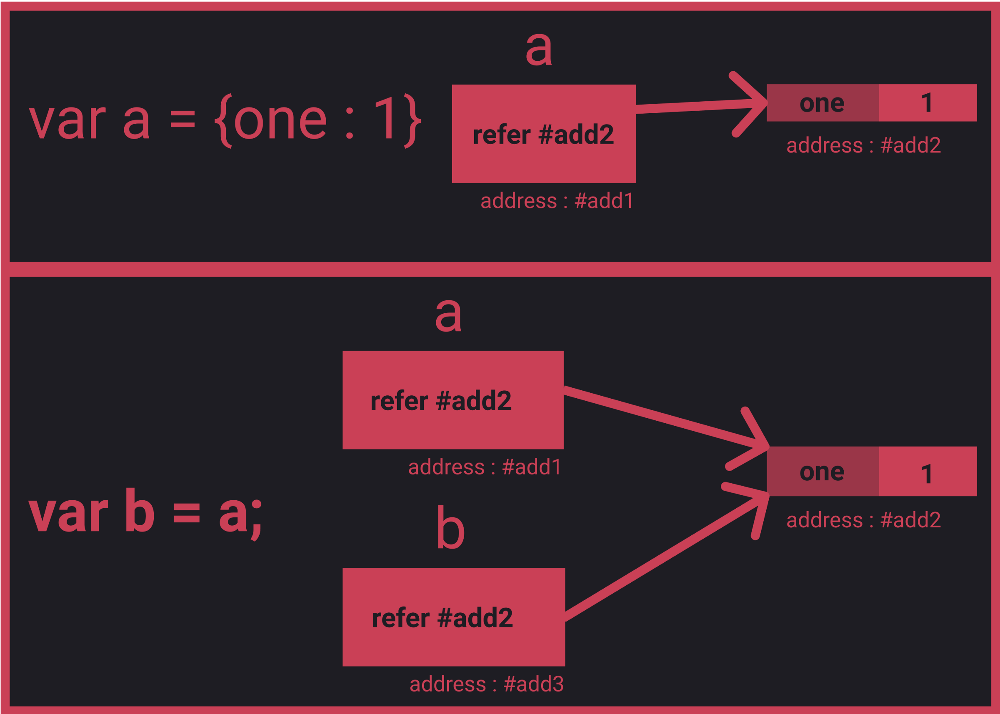
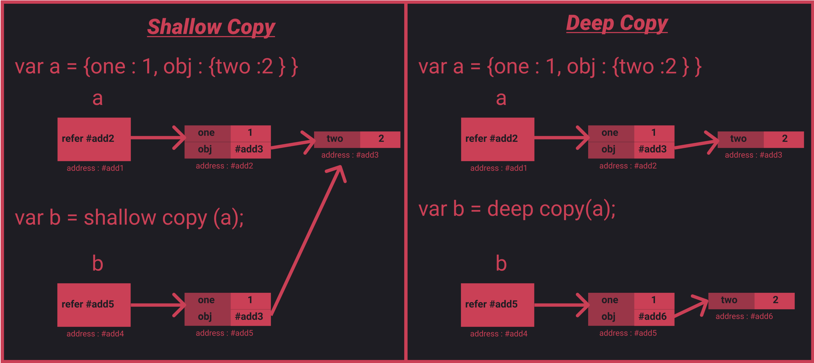

Javascript Info
symbol
FINALLY - ES6 Symbols are Explained!
use strict
Nullish coalescing operator
'??' - a ?? b expands to a !== null && a !== undefined ? a : b
Transpilers - A transpiler is a special piece of software that can parse (“read and understand”) modern code,
and rewrite it using older syntax constructs, so that the result would be the same.
E.g. JavaScript before year 2020 didn’t have the “nullish coalescing operator” ??. So, if a visitor uses an outdated browser, it may fail to understand the code like height = height ?? 100.
transpiler
A transpiler would analyze our code and rewrite height ?? 100 into (height !== undefined && height !== null) ? height : 100.
Babel is one of the most prominent transpilers
Modern project build systems, such as webpack, provide means to run transpiler automatically on every code change, so it’s very easy to integrate into development process.
Polyfills
Polyfills - In some (very outdated) JavaScript engines, there’s no Math.trunc, so such code will fail.
A script that updates/adds new functions is called “polyfill”. It “fills in” the gap and adds missing implementations.
Two interesting libraries of polyfills are:
core js that supports a lot, allows to include only needed features.
polyfill.io service that provides a script with polyfills, depending on the features and user’s browser.
Objects
JavaScript’s object model
Different Ways to Duplicate Objects in JavaScript
primitive data

object

shallow copy deep copy

Usually, the figure brackets {...} are used. That declaration is called an
object literal.
multiword property names
let user = {
name: "John",
age: 30,
"likes birds": true
// multiword property name must be quoted
};
“trailing” or “hanging” comma
let user = {
name: "John",
age: 30,
}
Square brackets
let user = {};
// set
user["likes birds"] = true;
Square brackets also provide a way to obtain the property name as the result of any expression – as opposed to a literal string – like from a variable as follows:
let key = "likes birds";
// same as user["likes birds"] = true;
user[key] = true;
the variable
key may be calculated at run-time or depend on the user input
let key = prompt("What do you want to know about the user?", "name");
// access by variable
alert( user[key] ); // John (if enter "name")
Computed properties
let fruit = prompt("Which fruit to buy?", "apple");
let bag = {
[fruit]: 5, // the name of the property is taken from the variable fruit
};
alert( bag.apple ); // 5 if fruit="apple"
Property value shorthand
function makeUser(name, age) {
return {
name: name,
age: age,
// ...other properties
};
}
let user = makeUser("John", 30);
alert(user.name); // John
Instead of name:name we can just write name, like this:
function makeUser(name, age) {
return {
name, // same as name: name
age, // same as age: age
// ...
};
Property existence test, “in” operator
"key" in object
let user = { name: "John", age: 30 };
alert( "age" in user ); // true, user.age exists
alert( "blabla" in user ); // false, user.blabla doesn't exist
Why does the in operator exist? Isn’t it enough to compare against undefined?
Well, most of the time the comparison with undefined works fine. But there’s a special case when it fails, but "in" works correctly.
It’s when an object property exists, but stores undefined:
let obj = {
test: undefined
};
alert( obj.test ); // it's undefined, so - no such property?
alert( "test" in obj ); // true, the property does exist!
}
The “for…in” loop
let user = {
name: "John",
age: 30,
isAdmin: true
};
for (let key in user) {
// keys
alert( key ); // name, age, isAdmin
// values for the keys
alert( user[key] ); // John, 30, true
}
Ordered like an object
let codes = {
"49": "Germany",
"41": "Switzerland",
"44": "Great Britain",
// ..,
"1": "USA"
};
for (let code in codes) {
alert(code); // 1, 41, 44, 49
}
Object references and copying
A variable assigned to an object stores not the object itself, but its “address in memory” – in other words “a reference” to it.
let user = { name: "John" };
let admin = user; // copy the reference
let user = { name: 'John' };
let admin = user;
admin.name = 'Pete'; // changed by the "admin" reference
alert(user.name); // 'Pete', changes are seen from the "user" reference
Comparison by reference
let a = {};
let b = a; // copy the reference
alert( a == b ); // true, both variables reference the same object
alert( a === b ); // true
two independent objects
let a = {};
let b = {}; // two independent objects
alert( a == b ); // false
Cloning and merging, Object.assign
let user = {
name: "John",
age: 30
};
let clone = {}; // the new empty object
// let's copy all user properties into it
for (let key in user) {
clone[key] = user[key];
}
// now clone is a fully independent object with the same content
clone.name = "Pete"; // changed the data in it
alert( user.name ); // still John in the original object
Object.assign(dest, [src1, src2, src3...]) - copy paste content
Objects are assigned and copied by reference. In other words, a variable stores not the “object value”, but a “reference” (address in memory) for the value. So copying such a variable or passing it as a function argument copies that reference, not the object itself.
All operations via copied references (like adding/removing properties) are performed on the same single object.
To make a “real copy” (a clone) we can use Object.assign for the so-called “shallow copy” (nested objects are copied by reference) or a “deep cloning” function, such as _.cloneDeep(obj).
let user = { name: "John" };
let permissions1 = { canView: true };
let permissions2 = { canEdit: true };
// copies all properties from permissions1 and permissions2 into user
Object.assign(user, permissions1, permissions2);
// now user = { name: "John", canView: true, canEdit: true }
If the copied property name already exists, it gets overwritten:
Nested cloning
Until now we assumed that all properties of user are primitive. But properties can be references to other objects. What to do with them?
let user = {
name: "John",
sizes: {
height: 182,
width: 50
}
};
let clone = Object.assign({}, user);
alert( user.sizes === clone.sizes ); // true, same object
sizes object is not copied. It is nested object
// user and clone share sizes
user.sizes.width++; // change a property from one place
alert(clone.sizes.width); // 51, see the result from the other one
Object to primitive conversion
Modern Javascript Objects 5 Object to primitive conversion
What happens when objects are added obj1 + obj2, subtracted obj1 - obj2 or printed using alert(obj)?
when addition and substraction is used on objects it is converted to number
In that case, objects are auto-converted to primitives, and then the operation is carried out.
In the chapter Type Conversions we’ve seen the rules for numeric, string and boolean conversions of primitives. But we left a gap for objects. Now, as we know about methods and symbols it becomes possible to fill it.
All objects are true in a boolean context. There are only numeric and string conversions.
The numeric conversion happens when we subtract objects or apply mathematical functions. For instance, Date objects (to be covered in the chapter Date and time) can be subtracted, and the result of date1 - date2 is the time difference between two dates.
As for the string conversion – it usually happens when we output an object like alert(obj) and in similar contexts.
obj will be converted to string as alert takes string